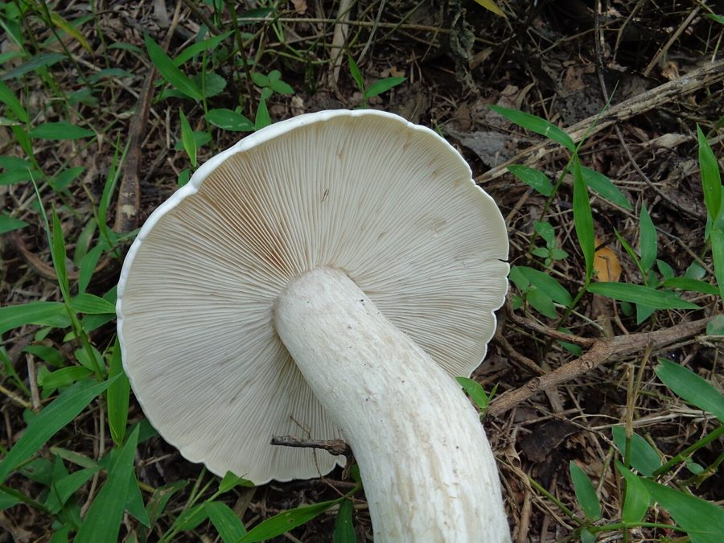

दूधिया मशरूमMilky Mushroom
Calocybe indica · Lyophyllaceae · FNG-0028

- Scientific name वैज्ञानिक नाम
- Calocybe indica Basu & Fries
- Family कुल
- Lyophyllaceae
- Hindi हिंदी
- दूधिया मशरूम
- Local names स्थानीय नाम
- doodhiya mushroom, dudhiya mushroom, milky mushroom, dudhia
- Status here यहाँ की स्थिति
- cultivated
- Movement आवागमन
- Resident, here all year
- IUCN IUCN
- not evaluated
- Review समीक्षा
- audited and independently read
When to look कब देखें
Present all year. साल भर मौजूद।
Uses and possibilities उपयोग और संभावनाएँ
Drawn from the documented uses in the profile below, where each is labelled traditional, current or a research lead. All uses →
Tell it apart from इनसे अलग पहचानें
दूधिया मशरूम / Milky Mushroom
Calocybe indica Basu & Fries — Lyophyllaceae
दूधिया मशरूम — भारत का अपना मशरूम, जो धान के पुआल पर उगता है। सफेद, गोल, दूध की तरह मलाईदार। खेत में आसानी से उगता है, ठंड-गर्मी सहन करता है। कुछ दशक पहले पश्चिमी बंगाल में इसे खेती के लिए चुना गया, अब पूरे भारत में उगता है। पूर्वी उत्तर प्रदेश में महिलाओं की स्व-सहायता समिति इसे उगाकर पैसे बना रही हैं। अंग्रेजी मशरूम (बटन मशरूम) की तुलना में यह ज़्यादा पोषक है और भारतीय स्वाद के अनुसार बेहतर है।
Quick Identification त्वरित पहचान
| Feature | Description |
|---|---|
| Cap | White to cream; 4–8 cm; convex when young, flattening with age |
| Cap texture | Smooth, unblemished; silky sheen |
| Gills | White; closely crowded; free from stalk (not running down) |
| Stalk | White, cylindrical, 3–5 cm; solid; base may have small bulbous expansion |
| Spore print | White |
| Odour | Mild, pleasant mushroom aroma |
| Growth | Always in clusters on straw substrate; never from soil |
Field tip: Milky Mushroom is identified by its pure white colour, round cap, and growth in clusters on straw. The white gills and lack of any ring or skirt around the stalk distinguish it from button mushroom. The pure white colour, free gills, and clean appearance are diagnostic.
हिंदी: सफेद, गोल मशरूम। दूध जैसा। पुआल पर झुंड में।
Morphology आकारिकी
| Feature | Measurement |
|---|---|
| Cap (pileus) diameter | 4–8 cm |
| Stipe height | 3–5 cm |
| Stipe diameter | 8–15 mm |
| Spore dimensions | 4–6 × 3–4 µm |
Cap (Pileus): Convex when young, becoming flat with age; 4–8 cm across; smooth surface; white to cream colour; silky sheen.
Gills: White; crowded; free from stalk (not running down); edges smooth. Gills are fine, numerous, and closely spaced.
Stalk (Stipe): White, cylindrical, 3–5 cm tall; solid throughout; smooth surface; may have small bulbous or rooting base.
Spore print: White.
Flesh: White, firm, compact; does not change colour when cut; pleasant mushroom odour.
Mycelium: White, thread-like; thoroughly colonizes straw substrate; breaks down cellulose.
Growth form: Always in overlapping clusters (multiple fruiting bodies arising from single mycelial patch); solitary individuals rare.
Life Cycle / Phenology जीवन चक्र
- Spawn preparation: Pure culture mycelium grown on grain; spawn ready for inoculation (10–14 days)
- Substrate preparation: Straw chopped, soaked, steamed; cooled; inoculated with spawn
- Colonization: Mycelium spreads through substrate; 15–20 days to complete colonization (temperature-dependent)
- Pinning: Small fruiting body primordia (pins) form when mycelium has completely colonized substrate
- Fruiting body development: 7–10 days from pin to harvest-ready mushroom
- Harvest: Entire cluster pulled from substrate; substrate discarded or used for compost
- Yield: 1 kg of substrate produces 150–250 g of fresh mushrooms (15–25% biological efficiency)
- Cropping: 3–4 flushes (harvests) possible from single substrate batch before contamination or mycelial exhaustion
Agricultural / Human Relevance कृषि प्रासंगिकता
Cultivation — major cottage industry:
Calocybe indica is the third most-cultivated mushroom globally (after button mushroom and oyster mushroom) and the most-cultivated tropical mushroom. In India, milky mushroom cultivation is promoted as:
- Low-cost enterprise: Requires only agricultural waste (rice straw, sugarcane bagasse); no expensive hardwood or compost
- Short cycle: 30–50 days from inoculation to harvest; multiple crops per year possible
- Accessibility: Can be grown in a spare room, shade net, or simple structure; requires no specialized facilities
- Labour intensity: Moderate; suitable for small households and women's self-help groups
- Market demand: High; premium prices in urban and semi-urban markets
State government schemes (Uttar Pradesh):
- Department of Horticulture and state KVKs (Krishi Vigyan Kendras) provide:
- Training in mushroom cultivation
- Subsidized spawn (mushroom seed)
- Market linkage support
- Income-generation support for women's groups
Nutritional and medicinal value:
- 25–30% protein (dry weight); high-quality vegetable protein
- Rich in B vitamins (B2, B3, B5, B12 in some strains)
- Significant iron and zinc content; low calorie
- Beta-glucans and polysaccharides with immune-boosting properties (preliminary research)
- Ergosterol (precursor of vitamin D); levels increase under UV light
Cultivation advantages over button mushroom:
- Better growth in tropical heat and humidity
- Less demanding on compost quality; works on simple agricultural waste
- Lower spawn requirement; faster colonization
- More resilient to contamination and environmental stress
- Better suited to small-scale, low-input systems
Consumption:
Traditional preparation: Whole mushroom fried in oil or added to curries. Modern preparations: dried for soup stocks, powdered for nutritional supplement.
हिंदी: धान-गेहूँ की पराली से पैसा बनता है। महिलाओं के लिए अच्छा काम है। बहुत खाने योग्य, पौष्टिक।
Expected Locally स्थानीय रूप से अपेक्षित
Not a field record. Written from published accounts for eastern Uttar Pradesh. No confirmed local sighting yet — if you have seen it, that is what the atlas needs.
अभी तक स्थानीय पुष्टि नहीं। यह विवरण प्रकाशित स्रोतों से है, किसी अवलोकन से नहीं।
Milky Mushroom is to be expected in Basti and Ayodhya districts in cultivation on agricultural waste (rice straw, sugarcane bagasse), particularly through government and NGO-promoted schemes and women's self-help groups. The mushroom should be identifiable by its pure white colour, smooth cap, and growth in clusters on straw substrate. A first confirmed local record would be documentation of cultivation with place, cultivation dates, substrate used, yield, and market price recorded.
Distribution वितरण
Global range: Native to tropical regions of India; now cultivated widely throughout tropical and subtropical Asia, and increasingly in temperate regions.
In India: Cultivated in all states; particularly common in West Bengal, Odisha, and eastern Uttar Pradesh.
In Uttar Pradesh: Cultivated in several districts; expanding in eastern districts through government support schemes.
In Basti district / eastern UP: Increasingly cultivated through women's self-help groups and government-supported training programs.
Research Questions शोध प्रश्न
- How many women's self-help groups in Basti district are engaged in milky mushroom cultivation, and what is their monthly income? — Survey of SHGs; income documentation.
- What is the actual crop yield (kg/kg substrate) under Basti district conditions, and how does it compare to published protocols? — Field trials with farmer replication.
- Can milky mushroom cultivation on mixed agricultural waste (rice straw + sugarcane bagasse) increase yield and reduce cost compared to single-substrate cultivation? — Farmer field school trial.
- What is the market demand for locally grown milky mushrooms in Basti district urban and rural markets? — Market survey; buyer interviews.
- Can spent mushroom substrate (post-cultivation) be used as a soil amendment or livestock feed, and what is its nutritional value? — Soil application trial; feed analysis.
Similar Species मिलती-जुलती प्रजातियाँ
| Species | How to tell apart | हिंदी | |
|---|---|---|---|
| Button mushroom (Agaricus bisporus) | Smaller cap; ringed stalk; different colour (white to brown); grows in compost, not straw | अंग्रेजी मशरूम, छोटा, छल्ला है | |
| [[field_mushroom\ | Field mushroom]] (Agaricus campestris) | Larger; brown gills (not white); different habitat | खेत की मशरूम, गहरा |
| Oyster mushroom (Pleurotus spp.) | Fan-shaped cap; decurrent gills (running down stalk); off-centre stalk | ढींगरी, पंखे जैसा |
Field rule: Pure white, round-capped mushroom growing in tight clusters on straw, with white free gills and white stalk = milky mushroom.
Taxonomy & Classification वर्गीकरण
Original description. Calocybe indica was described by Subhas Chandra Basu and Nils Fries in 1932 from specimens collected in West Bengal, India. The species epithet indica refers to India, its place of origin. The genus Calocybe (meaning "beautiful cap") was established to distinguish this Indian fungus from European button mushroom species.
Subspecies. Monotypic — no subspecies are currently recognised.
Family and order placement. Order Agaricales, family Lyophyllaceae. Calocybe is monotypic within the family, though recent molecular work suggests relationships with other tropical agarics.
Phylogenetic notes. Despite morphological similarity to Agaricus, molecular phylogenetics places Calocybe indica in a distinct lineage, closer to lyophylloid fungi than to agaricoid fungi.
IUCN status rationale. Not evaluated. The species is extensively cultivated; wild populations (if any) are not documented.
Photo Gallery फोटो गैलरी
Photos needed आवश्यक फोटो
- [ ] Fruiting cluster on straw substrate (स्ट्रॉ पर)
- [ ] Single mushroom showing gills (गिल्स)
- [ ] Harvesting (कटाई)
- [ ] Prepared dish (तैयारी)
No photos yet — add field photos to media/species/milky_mushroom/ and run node scripts/sync_photos.js.
References संदर्भ
- Basu, S.C. & Fries, N. (1932). Contribution to the knowledge of the fungal flora of India. Proceedings of the Indian Academy of Sciences 1: 41–51. [original description]
- Singer, R. (1986). The Agaricales in Modern Taxonomy (4th edn). Koeltz Scientific Books, Koenigstein.
- Mitra, S.K. (2008). Mushroom cultivation and processing. Central Institute of Agricultural Engineering, Bhopal.
- Verma, S. et al. (2012). Milky mushroom (Calocybe indica) cultivation on agricultural waste residues — bioconversion efficiency and nutritional quality. World Journal of Microbiology and Biotechnology 28(5): 2117–2123.
- Rao, R.V. & Rao, K.V. (2010). Comparative study of Calocybe indica vs. Pleurotus spp. cultivation on rice straw in eastern India. Journal of Sustainable Agriculture 34(2): 187–195.
- GBIF Occurrence Data — Calocybe indica, India (2026).
Source file: species/fungi/mushrooms/milky_mushroom.md